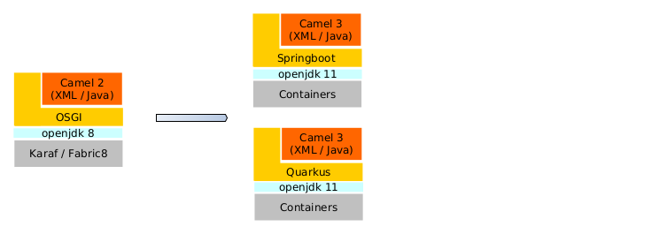
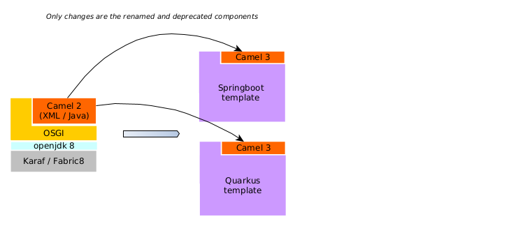

Solution Pattern: Migrating from Red Hat Fuse to Red build of Apache Camel
Architecture
1. Common Challenges
A major migration is always a technical challenge.
-
Custom libraries can show conflicts with new ones; others might be deprecated with a need for a complete rewriting.
-
Some important architectural concerns also need to be taken into consideration, like the switch from Fuse Fabric to Red Hat OpenShift as the applications management solution, or moving away from Hawtio as the observability platform.
However, the migration of a Camel application should stick to a Camel-centric discussion, effort and design.
Other elements such as underlying JDK version, underlying runtime characteristics, configuration keys name and values, should not represent a significant part of the migration effort.
As a migration does not bring immediate new business value, it’s important that the effort it requires be as low as possible, and that its duration be as short as possible.
2. Technology Stack
-
Red Hat Application Foundation
3. An in-depth look at the solution’s architecture
The Red Hat build of Apache Camel is an Cloud-native, multi-language and a multi-runtime integration stack. Camel-based integration logic can be written in XML or Java, and can behave as a Spring Boot, a Quarkus, or a Serverless artifact.
The present demo will take a legacy API developed in JBoss Fuse 6.2 on Karaf, in Blueprint XML. It’s suggested that such an application targets the Quarkus runtime. The provided Quarkus template is 100% compatible with Camel K, so the resulting migrated application is immediately ready to be added to a serverless stack.
The material can be used to migrate any Fuse 6 or 7 distribution to the Red Hat build of Apache Camel. The demos will however focus on migrating a Fuse 6 application, and more concretely a Camel v2.17 one, in Blueprint XML format, running on Karaf 2. The XML format will be converted to the optimized IO XML one. This path has been chosen for the demonstration because it can be considered the hardest one. Applications running on Fuse 7, no matter which distribution, could use the same approach and will benefit from a shortest migration effort.
In general, the following migration strategy should be considered:
-
Language
-
If you have integrations in Java, keep them in Java DSL
-
If you have integrations in XML, migrate to the optimized IO XML
-
-
Runtime
-
If you are already on Fuse 7 Spring Boot, migrate toward Spring Boot
-
In any other cases, you could target Quarkus
-
-
Target
Probably, the target should remain a "standard" container application, ready for Serverless but not mandatorily a Function.
Thus, the demos will showcase several migrations to "plain" Spring Boot or quarkus applications, and there will be one extra demo to showcase a migration from that result to Camel K.
4. How can the solution pattern help ?
A Fuse / Apache Camel based application can be seen as a composition of multiple layers: the Apache Camel layer, the runtime layer (i.e. OSGI) and the platform layer (i.e. Karaf/Fabric8).

Theoretically, the migration would involve changes in all layers. The material here consists in ready to use templates that are already perfectly suitable for the target so that the migration effort will be reduced to a small subset of changes on the Apache Camel layers. The templates are Maven artifacts, preconfigured with all required dependencies, and holding all the needed placeholders to migrate code and configuration in a timely fashion.
